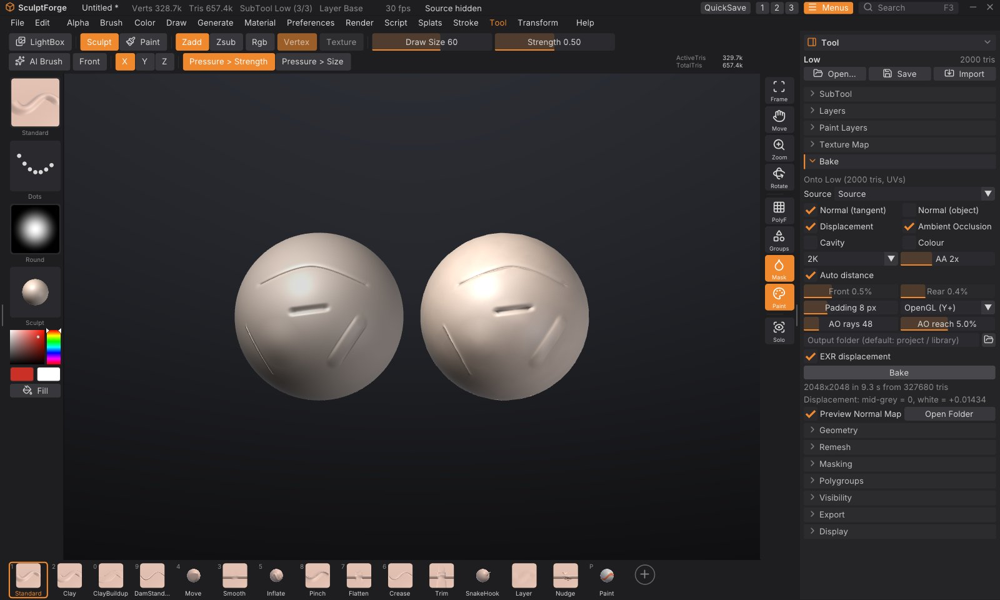

Baking normal and displacement maps
Game engines and renderers want light meshes. Baking captures the detail of your high-poly sculpt as images laid over the UVs of a low-poly version: a normal map makes the low-poly shade as if it had every crease and pore, a displacement map stores how far the surface moves, and ambient occlusion, cavity and colour maps feed materials. Tool > Bake makes all of them in one go, in the background, and shows the normal map on the low-poly right away so you can compare it with the sculpt.


What you need#
- A high-poly source: one or more SubTools with the detail. They stay as they are.
- A low-poly SubTool with UVs, in the same place as the high-poly. It can come from another app (import it with Tool > SubTool > Append; models with UVs keep them), or you make it in SculptForge: Duplicate the sculpt, Tool > Geometry > Decimate it, then Tool > Texture Map > Auto UV.
The maps go onto the active SubTool, so select the low-poly before baking.
Bake in five steps#
- Select the low-poly SubTool and open Tool > Bake in the right tray. The first line says which SubTool the maps go onto, or "No UVs" if it needs Auto UV first.
- Source: leave All visible SubTools to bake from everything that is shown (except the low-poly), or pick one SubTool.
- Tick the maps you want, and choose the size (1K, 2K, 4K or 8K).
- Click Bake. A progress bar shows while it works on every processor core; you can keep working, or click Cancel Bake.
- When it is done, the status line reports what was baked and where the files went, and the low-poly shows its normal map. Hide the high-poly (Tool > SubTool, the eye) to compare, or untick Preview Normal Map to see the bare low-poly.
The maps#
| Map | File | What it holds |
|---|---|---|
| Normal (tangent) | <name>_normal.png | The high-poly's surface direction relative to the low-poly, in tangent space. The map for game engines |
| Normal (object) | <name>_normal_object.png | The high-poly's normals in model space. For tools that want object-space maps |
| Displacement | <name>_displacement.png and .exr | The distance from the low-poly to the high-poly along the low-poly's normal |
| Ambient Occlusion | <name>_ao.png | How much of the sky each point sees: darker in creases, folds and cavities |
| Cavity | <name>_cavity.png | The fine surface curvature: mid-grey where the surface is smooth, dark in cracks, light on ridges |
| Colour | <name>_color.png | The source's polypaint, or its painted texture |
<name> is the low-poly SubTool's name. Colour is skipped when the source has neither polypaint nor a texture.
Tangent-space normal maps that look right everywhere#
SculptForge computes tangents with MikkTSpace, the same method Blender, Unreal Engine, Unity, Godot, Substance and xNormal use. A map baked here shows correctly in all of them, as long as the low-poly is exported with its normals and UVs (every SculptForge export keeps them). Choose the green channel convention under the map settings:
- OpenGL (Y+): Blender, Unity, Godot, Substance, three.js. The default.
- DirectX (Y-): Unreal Engine's native convention. Send to Unreal flips an OpenGL map on import (see below), so you only need DirectX when you import into Unreal by hand.
Displacement: mid-grey is zero#
The 16-bit PNG stores zero displacement as mid-grey, the high-poly outside the low-poly as lighter and inside as darker. White means +scale and black -scale in world units; the scale is the largest distance found, shown under the Bake button ("Displacement: mid-grey = 0, white = +0.0143") and in the status line. Use it as the displacement strength in your renderer (with a midlevel of 0.5). With EXR displacement ticked, a 32-bit float OpenEXR holds the real distances in world units, with no scale to set.
Settings#
| Setting | What it does |
|---|---|
| Source | The high-poly: one SubTool, or every visible SubTool except the active one. Hidden faces of the source are ignored |
| Size | 1K, 2K (default), 4K or 8K square |
| AA | Anti-aliasing: 1 to 4 means 1, 4, 9 or 16 rays per texel, averaged. 2 (the default) gives clean edges |
| Auto distance | Measure how far the high-poly lies in front of and behind the low-poly, and cast rays just that far. After a bake, Front and Rear show what it measured |
| Front / Rear | With Auto off: how far in front of the low-poly rays start, and how far behind it they look, as a percentage of the model's size (its bounding-box diagonal). ZBrush and Substance call these the max frontal and rear distances |
| Padding | Texels around each UV island filled with the island's edge colours, so seams don't show once an engine mipmaps the map. 8 suits 2K; use 16 for 4K and 8K |
| OpenGL / DirectX | The normal map's green channel convention (see above) |
| AO rays, AO reach | Ambient occlusion quality, and how far away geometry still darkens a point (a percentage of the model's size) |
| Output folder | Where the files go. Empty: beside your last export, else the project's folder, else Bakes in your library folder. Open Folder shows it after a bake |
| EXR displacement | Also write the displacement as a 32-bit float EXR |
How the bake works#
For every texel of the low-poly's UVs, SculptForge finds the matching point on the low-poly and casts a ray along its smoothed normal, from Front outside the surface to Rear inside it (a "cage"), and keeps the high-poly hit nearest to the low-poly. The normal, distance, occlusion and colour found there go into the maps. Rays follow the smoothed normals, so hard edges of the low-poly don't leave gaps.
- Missing detail ("x% of texels found no surface" in red under the Bake button): rays didn't reach the high-poly. Turn off Auto distance and raise Front and Rear.
- Detail from the wrong place (for example the inside of an ear showing on its back): the rays reach too far. Lower Rear (or Front), or bake the parts from separate SubTools with Source.
- The bake works on copies, so you can keep sculpting meanwhile. If the low-poly's triangles or UVs change afterwards, the normal map preview turns off because it no longer fits (undo brings it back).
Send to Unreal with the normal map#
When the last bake made a normal map, its low-poly SubTool is shown and still fits the map, Send to Unreal (Tool > Export) imports the map too, as T_<Name>_N next to the mesh, set up as a normal map (linear, normal map compression), with Unreal's Flip Green Channel set for an OpenGL map. This works with an Unreal Editor on the same computer; for one on another computer, import the PNG by hand. See Exporting, Unreal and ZBrush.
Commands#
| Command | What it does |
|---|---|
bake | Bake onto the active SubTool and write the maps. Options: source=all or a SubTool name, maps=normal,object_normal,displacement,ao,cavity,color (or all), size=2048 (512 to 8192, or 1k...8k), out=folder, name=prefix, front=0.02 and rear=0.02 (fractions of the model's size, or auto), samples=2, padding=8, ao_rays=48, ao_distance=0.05, green=opengl or directx, displacement_scale= (world units at white), exr=true |
For example, from the console or sculptforge-cli:
subtool_select name=Body_low; bake source=Body maps=normal,ao,displacement size=4096 out=mapsThe command runs in the foreground (scripts wait for it); the Bake button runs the same bake in the background. See Scripting and automation.